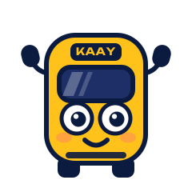
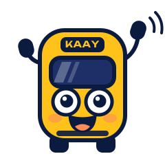
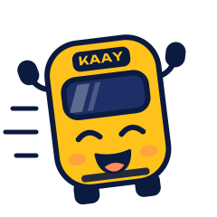
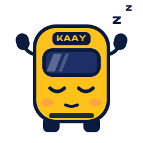

Kaay
le petit bus d'Ana Bus

« Kaay » veut dire « viens ! » en wolof. C'est le bus du logo devenu personnage : ses phares sont ses yeux, ses rétroviseurs ses mains.





Où Kaay apparaît
- Écran de bienvenue et notifications
- Écrans sans résultat ou en erreur
- Le moment « Mu ngi ñëw »
- Vidéos, affiches, réseaux sociaux
Où il n'apparaît pas
- Sur la carte et le suivi du bus
- À côté des minutes d'attente
- À la place du logo
- Déformé, recoloré, ou sans contour sur fond sombre
Ana Bus, maintenant
Mu ngi ñëw
Le 23 vers Petersen arrive à Liberté 6 dans moins d'une minute.
 Né du symbole Ana Bus : même jaune, même bleu nuit, même bus. Sur fond sombre, utilisez la version avec contour blanc.
Né du symbole Ana Bus : même jaune, même bleu nuit, même bus. Sur fond sombre, utilisez la version avec contour blanc.